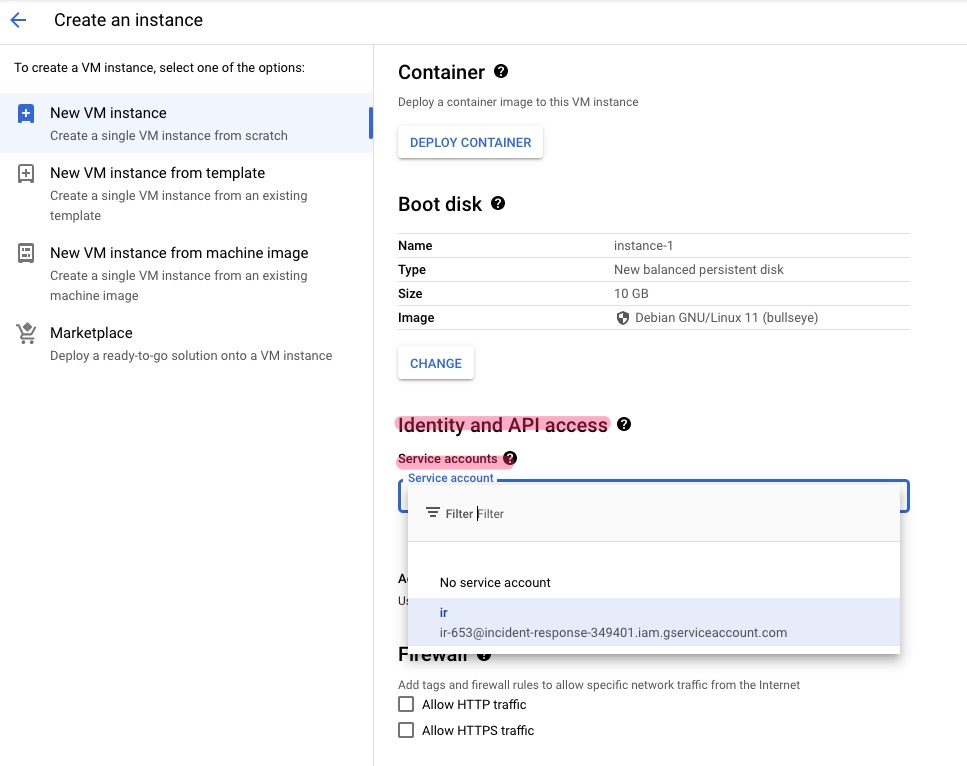

Security Hardening
Contents
Security Hardening#
To further minimise the possiblity of misuse/abuse/compromise of the service account, it should be appropriately hardened. For each hardening recommendation, monitoring queries had also been included to enable the creation of alerts for any violations.
Service Account IAM Policy#
Only IR members should be granted Admin/Token Creator/User of the service account. This ensures that the service account cannot be used/re-configured/impersonated by external users.
Monitoring#
Attempts to modify IAM policy of the service account
resource.type="service_account"
protoPayload.methodName:"SetIAMPolicy"
protoPayload.request.resource="projects/<project_id>/serviceAccounts/<svc_acct_id>"
Will match the following
...
serviceData: {
@type: "type.googleapis.com/google.iam.v1.logging.AuditData"
policyDelta: {
bindingDeltas: [
0: {
action: "ADD"
role: "roles/iam.serviceAccountAdmin"
member: "user:<unauthorised_user>"
}
]
}
}
request: {
resource: "projects/<project_id>/serviceAccounts/<svc_acct_id>"
policy: {
etag: "BwW3/envz6c="
bindings: [
0: {
members: [
0: "user:<authorised_user>"
3: "user:<unauthorised_user>"
]
role: "roles/iam.serviceAccountAdmin"
}
...
]
version: 3
}
@type: "type.googleapis.com/google.iam.v1.SetIamPolicyRequest"
}
...
Response#
Determine violator using the following fields
a.protoPayload.authenticationInfo.principalEmail
b.protoPayload.requestMetadata.callerIp
c.protoPayload.requestMetadata.callerSuppliedUserAgentCheck if violator was aware of this activity and if so, what were his/her intentions
Check for the exact modifications to the IAM policy of the service account and subsequent misuse of the service account if necessary
Revert all modifications if necessary
Service Account Keys#
No keys should be created for the service account. Without a key, there would be no risk of it being exposed and misused by unauthorised actors.
Workaround#
Instead of using a key to authenticate and perform operations with the service account, it can be impersonated with a user account (with MFA enabled).
# with gcloud cli
# login as user account
gcloud auth login
# impersonate service account
gcloud config set auth/impersonate_service_account <svc_acct>
How it looks like in the logs:
...
authenticationInfo: {
principalEmail: "<svc_acct>"
serviceAccountDelegationInfo: [
0: {
firstPartyPrincipal: {
principalEmail: "<impersonating_user_acct>"
}
}
]
}
...
Alternatively, the service account can be attached to a GCE instance designated for investigation (see below image).
Monitoring#
Attempts to create service account key for service account
resource.type="service_account"
protoPayload.methodName:"CreateServiceAccountKey"
protoPayload.request.name="projects/<project_id>/serviceAccounts/<svc_acct_id>"
Will match the following
...
methodName: "google.iam.admin.v1.CreateServiceAccountKey"
request: {
@type: "type.googleapis.com/google.iam.admin.v1.CreateServiceAccountKeyRequest"
name: "projects/<project_id>/serviceAccounts/<svc_acct_id>"
private_key_type: 2
}
...
Response#
Determine violator using the following fields
a.protoPayload.authenticationInfo.principalEmail
b.protoPayload.requestMetadata.callerIp
c.protoPayload.requestMetadata.callerSuppliedUserAgentCheck if violator was aware of this activity and if so, what were his/her intentions
Check for unauthorised modifications made by the service account if necessary
Revert all modifications if necessary
OS Login#
If the service account is attached to a GCE instance designated for investigation, it should allow only SSH authentication with OS login. Refer to here for the benefits of using OS login.
Monitoring#
Attempts to add Compute OS Admin Login or Compute OS Login to a user account
resource.type="project"
protoPayload.methodName="SetIamPolicy"
protoPayload.serviceData.policyDelta.bindingDeltas.action="ADD"
(protoPayload.serviceData.policyDelta.bindingDeltas.role="roles/compute.osAdminLogin" OR protoPayload.serviceData.policyDelta.bindingDeltas.role="roles/compute.osLogin")
Will match the following
...
policyDelta: {
bindingDeltas: [
0: {
...
}
1: {
...
}
2: {
action: "ADD"
role: "roles/compute.osLogin"
member: "user:<user_acct>"
}
]
}
...
Response#
Determine violator using the following fields
a.protoPayload.authenticationInfo.principalEmail
b.protoPayload.requestMetadata.callerIp
c.protoPayload.requestMetadata.callerSuppliedUserAgentCheck if violator was aware of this activity and if so, what were his/her intentions
Check for unauthorised modifications made by the service account from the GCE instance if necessary
Revert all modifications if necessary